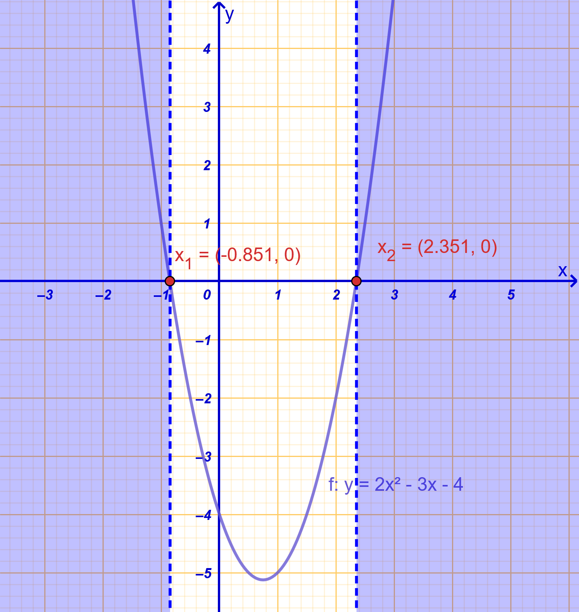
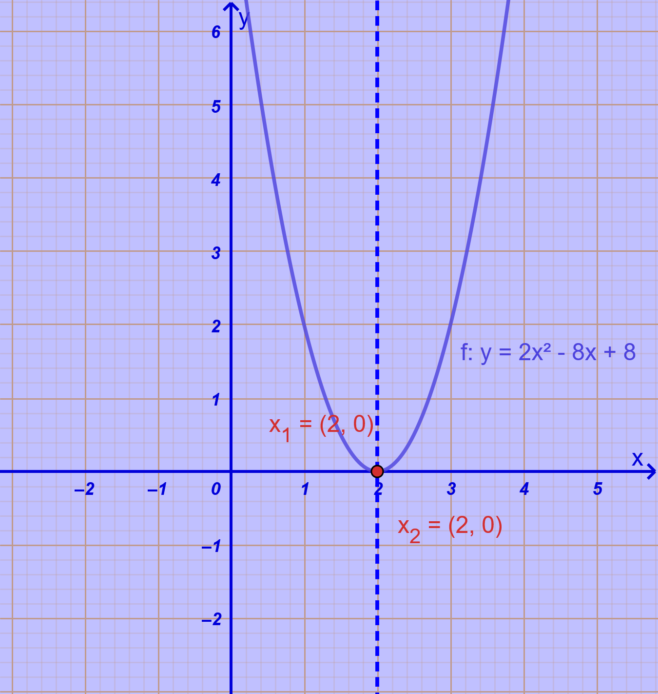
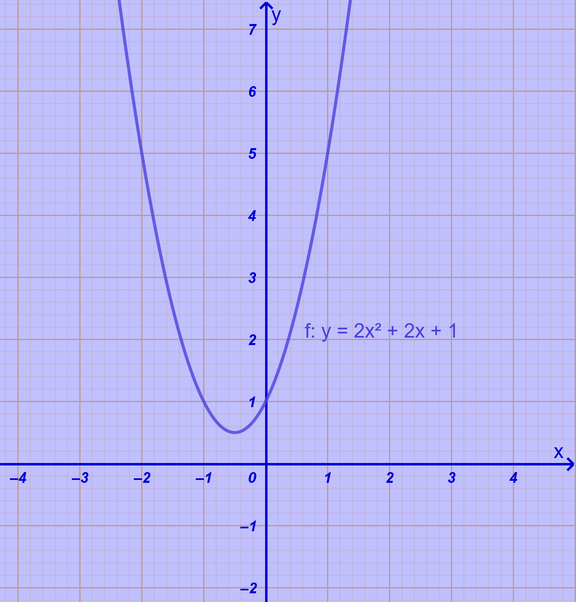
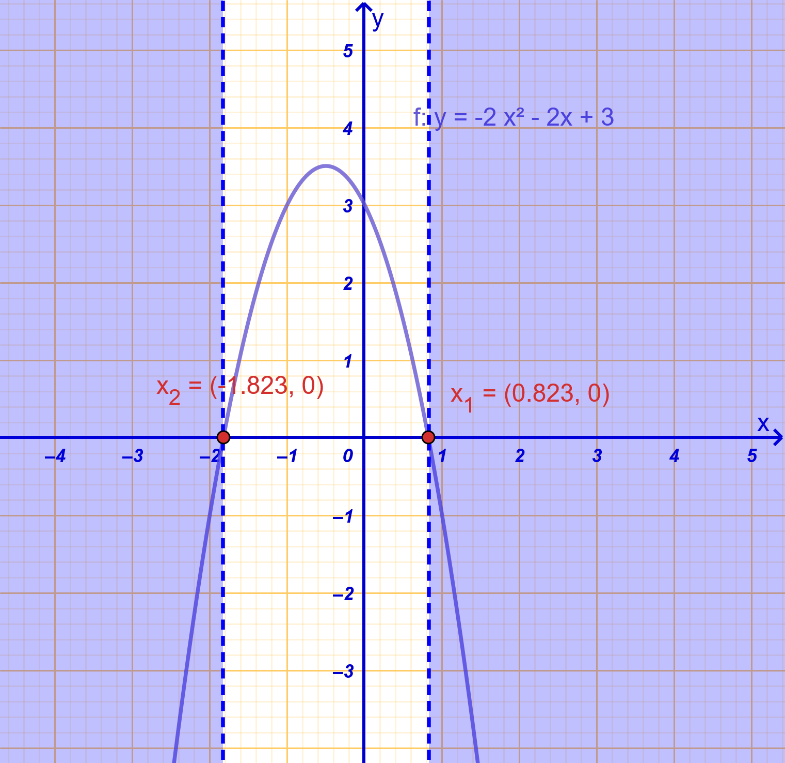
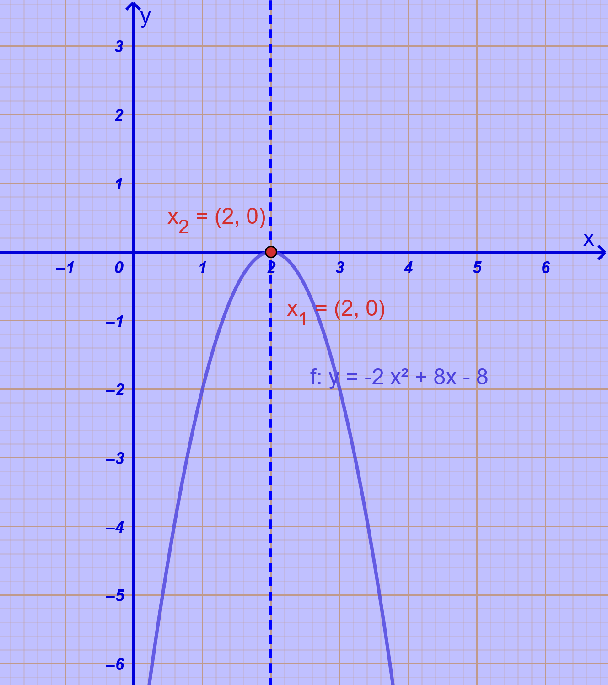
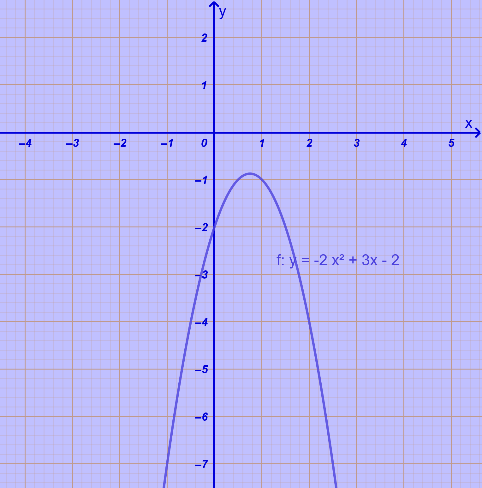
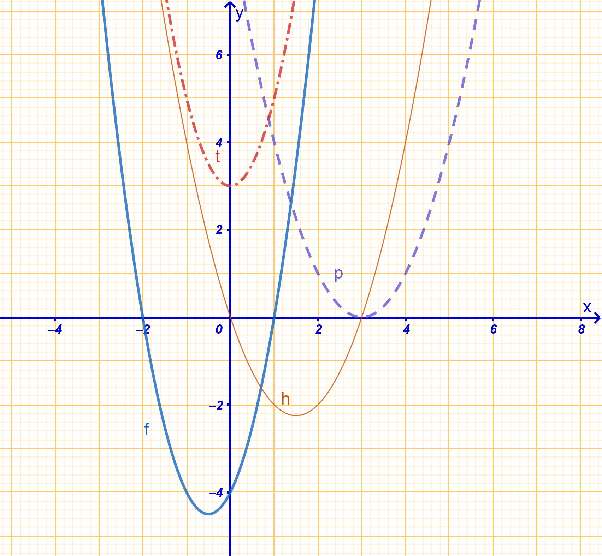
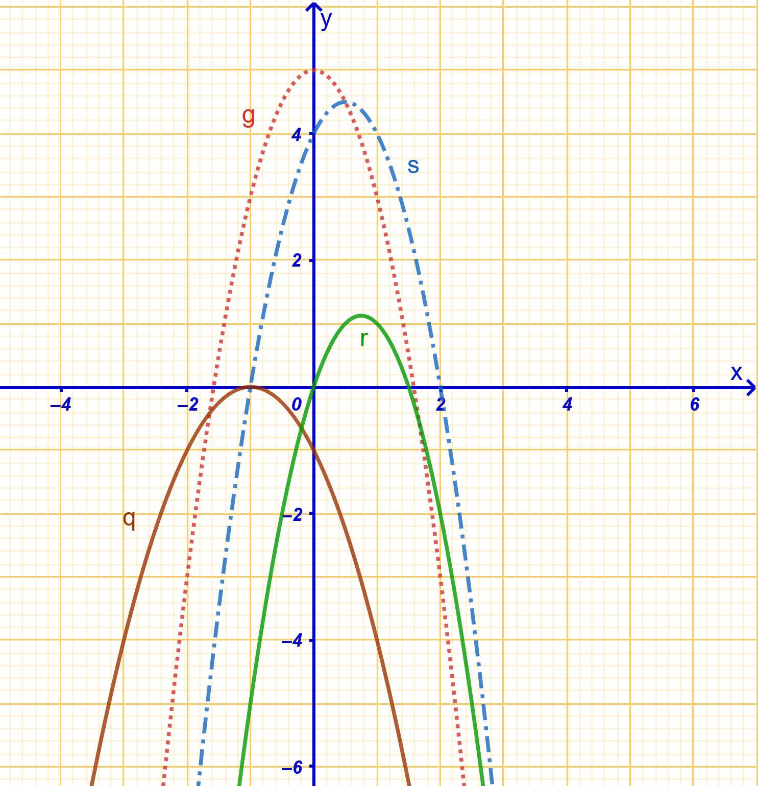
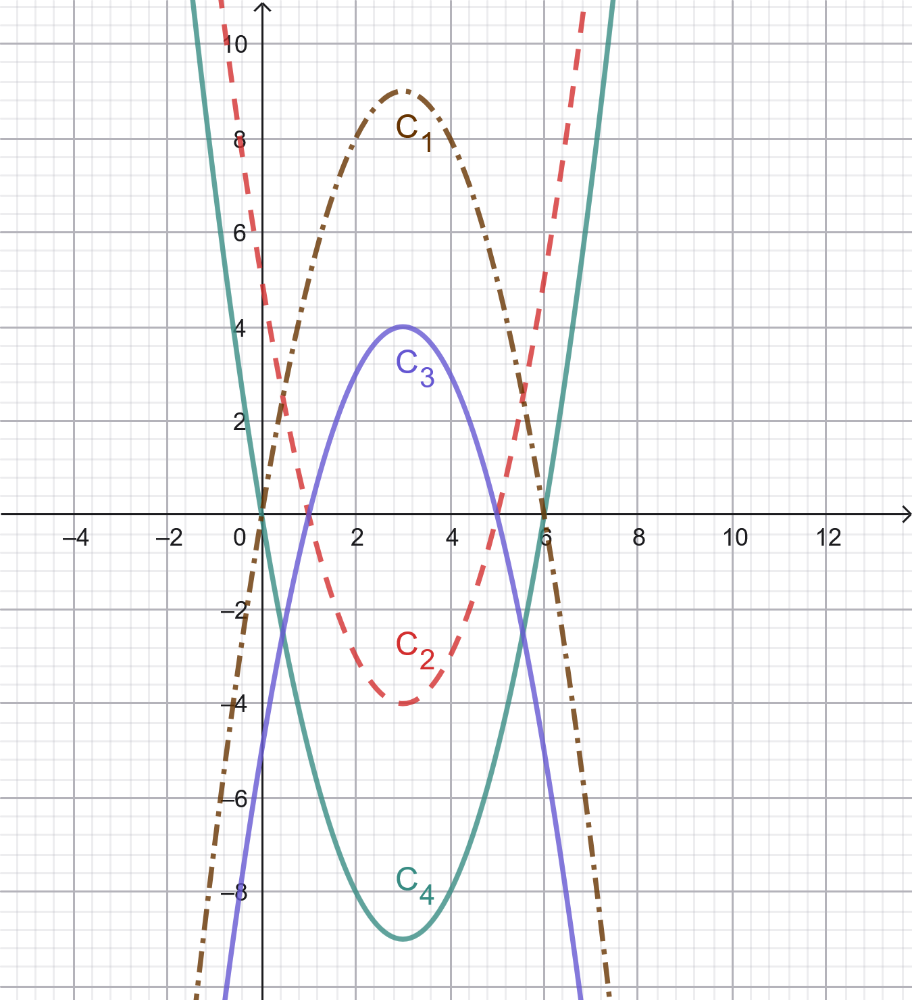
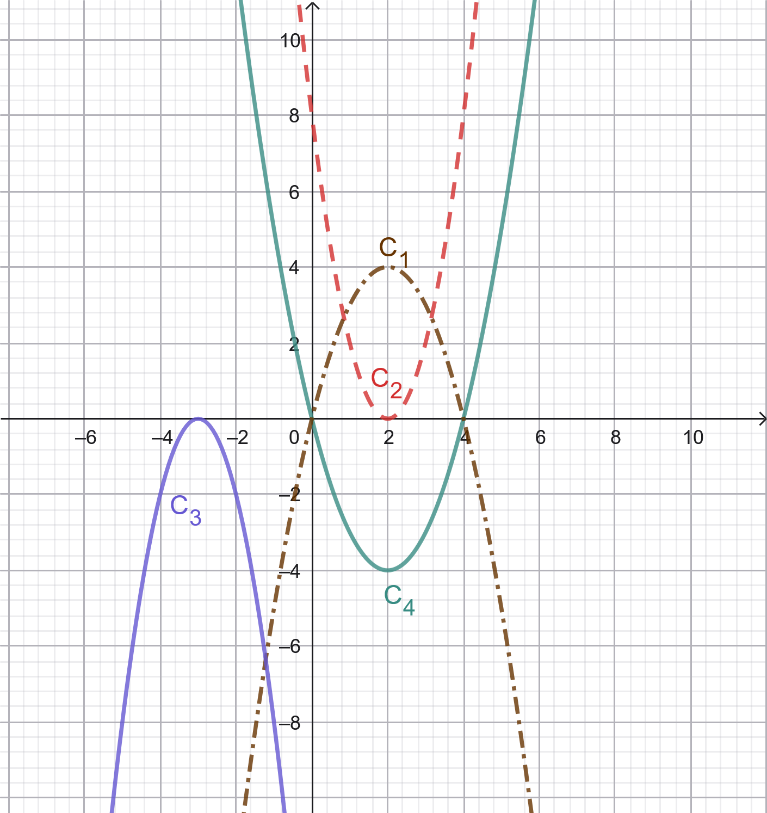

1 Μελέτη της συνάρτησης \(f(x)=αx^2+βx+γ\)
1.1 Η συμπλήρωση τετραγώνου είναι μια αλγεβρική μέθοδος
που χρησιμοποιείται για να μετασχηματίσει ένα τριώνυμο ή μια δευτεροβάθμια παράσταση σε μορφή που περιέχει το τέλειο τετράγωνο ενός διωνύμου. Η τεχνική αυτή είναι θεμελιώδης για την επίλυση δευτεροβάθμιων εξισώσεων, τη μελέτη των μετατοπίσεων μιας παραβολής και την παραγοντοποίηση σύνθετων παραστάσεων.
1.1.1 Η Διαδικασία της Μεθόδου
Για μια δευτεροβάθμια εξίσωση της μορφής \(\alpha x^2 + \beta x + \gamma = 0\) (με \(\alpha \neq 0\)), η μέθοδος ακολουθεί τα εξής βήματα:
Η διαδικασία περιλαμβάνει τα εξής αναλυτικά βήματα:
Διαίρεση ή εξαγωγή του συντελεστή \(\alpha\)$\alpha$: Για να διευκολυνθεί η διαδικασία, ο συντελεστής του \(x^2\) πρέπει να γίνει 1. Αν εργαζόμαστε με την παράσταση \(ax^2 + \beta x + \gamma\), ϐγάζουμε το \(a\) ως κοινό παράγοντα: \(a\left(x^2 + \dfrac{\beta}{\alpha}x + \dfrac{\gamma}{\alpha}\right)\).
Εμφάνιση του διπλάσιου γινομένου: Ο μεσαίος όρος \(\dfrac{\beta}{\alpha}x\) γράφεται με τέτοιο τρόπο ώστε να εμφανίζεται το διπλάσιο γινόμενο που απαιτεί η ταυτότητα \((A+B)^2 = A^2 + 2AB + B^2\). Συγκεκριμένα, ο όρος γίνεται: \(2 \cdot x \cdot \dfrac{\beta}{2\alpha}\).
Προσθαφαίρεση του κατάλληλου όρου: Για να «συμπληρωθεί» η ταυτότητα, προσθέτουμε και ταυτόχρονα αφαιρούμε (ώστε να μη μεταβληθεί η αξία της παράστασης) το τετράγωνο του δεύτερου όρου του γινομένου, δηλαδή το \(\left(\dfrac{\beta}{2\alpha}\right)^2 = \dfrac{\beta^2}{4\alpha^2}\).
Σχηματισμός της ταυτότητας: Οι τρεις πρώτοι όροι της παράστασης \(\left(x^2 + 2x\dfrac{\beta}{2\alpha} + \dfrac{\beta^2}{4\alpha^2}\right)\) αποτελούν πλέον το ανάπτυγμα της ταυτότητας \(\left(x + \dfrac{\beta}{2\alpha}\right)^2\).
Τελική απλοποίηση και μορφή: Η παράσταση παίρνει τη μορφή \(a\left[\left(x + \dfrac{\beta}{2\alpha}\right)^2 - \dfrac{\beta^2-4\alpha\gamma}{4\alpha^2}\right]\). Αν χρησιμοποιήσουμε τη διακρίνουσα \(\Delta = \beta^2 - 4\alpha\gamma\), η τελική κανονική μορφή είναι: \[f(x) = a \left[ \left(x + \dfrac{\beta}{2\alpha}\right)^2 - \dfrac{\Delta}{4\alpha^2} \right]\].
1.1.2 Βασικές Εφαρμογές
Επίλυση Εξισώσεων: Επιτρέπει την εύρεση των ριζών μιας εξίσωσης 2ου βαθμού χωρίς την άμεση χρήση του έτοιμου τύπου, απομονώνοντας το τετράγωνο στο ένα μέλος.
Γεωμετρική Ερμηνεία και Μετατοπίσεις: Χρησιμοποιείται για να αποδειχθεί ότι η γραφική παράσταση της \(f(x) = \alpha x^2 + \beta x + \gamma\) προκύπτει από δύο διαδοχικές μετατοπίσεις (οριζόντια και κατακόρυφη) της βασικής παραβολής \(y = \alpha x^2\).
Παραγοντοποίηση: Βοηθά στη μετατροπή αλγεβρικών αθροισμάτων σε γινόμενα, ειδικά σε περιπτώσεις όπου λείπει ένας όρος για να σχηματιστεί ταυτότητα (π.χ. στην παράσταση \(\alpha^4 + \beta^4 + \alpha^2\beta^2\)).
Εύρεση Ακροτάτων: Η μορφή που προκύπτει από τη συμπλήρωση τετραγώνου αποκαλύπτει αμέσως την κορυφή της παραβολής \(K\left(-\dfrac{\beta}{2\alpha}, -\dfrac{\Delta}{4\alpha}\right)\), η οποία αντιστοιχεί στο μέγιστο ή ελάχιστο της συνάρτησης.
1.2 Η \(f(x)=αx^2+βx+γ\) ώς μετατόπιση της \(f(x)=αx^2\)
Η γραφική παράσταση της συνάρτησης \(f(x) = \alpha x^2 + \beta x + \gamma\) είναι μια παραβολή που προκύπτει από δύο διαδοχικές μετατοπίσεις της βασικής παραβολής \(g(x) = \alpha x^2\).
Για να γίνουν εμφανείς αυτές οι μετατοπίσεις, ο τύπος της συνάρτησης μετασχηματίζεται μέσω της μεθόδου συμπλήρωσης τετραγώνου στην κανονική μορφή \(f(x) = \alpha \left(x + \dfrac{\beta}{2\alpha}\right)^2 - \dfrac{\Delta}{4\alpha}\), όπου \(\Delta = \beta^2 - 4\alpha\gamma\) είναι η διακρίνουσα.
Συγκεκριμένα, η διαδικασία περιλαμβάνει τα εξής βήματα:
Οριζόντια Μετατόπιση: Η παραβολή \(y = \alpha x^2\) μετατοπίζεται οριζόντια κατά τον άξονα \(x'x\) κατά \(-\dfrac{\beta}{2\alpha}\) μονάδες. Αν η τιμή \(-\dfrac{\beta}{2\alpha}\) είναι θετική, η καμπύλη μετατοπίζεται προς τα δεξιά, ενώ αν είναι αρνητική, μετατοπίζεται προς τα αριστερά.
Κατακόρυφη Μετατόπιση: Στη συνέχεια, η παραβολή μετατοπίζεται κατακόρυφα κατά τον άξονα \(y'y\) κατά \(-\dfrac{\Delta}{4\alpha}\) (ή ισοδύναμα \(\dfrac{4\alpha\gamma - \beta^2}{4\alpha}\)) μονάδες. Η μετατόπιση γίνεται προς τα πάνω αν η τιμή είναι θετική και προς τα κάτω αν είναι αρνητική.
Ως αποτέλεσμα αυτών των μετατοπίσεων, η κορυφή της παραβολής μεταφέρεται από το σημείο \(O(0,0)\) στο σημείο \(K\left(-\dfrac{\beta}{2\alpha}, -\dfrac{\Delta}{4\alpha}\right)\). Παράλληλα, ο άξονας συμμετρίας της συνάρτησης παύει να είναι ο άξονας \(y'y\) και γίνεται η ευθεία \(x = -\dfrac{\beta}{2\alpha}\).
1.3 Μελέτη της συνάρτησης \(f(x)=αx^2+βx+γ\) με \(\alpha \neq 0\)
Θεωρία, Ορισμοί και Ιδιότητες
Ορισμός και Πεδίο Ορισμού
Ορισμός: Η συνάρτηση \(f(x) = \alpha x^2 + \beta x + \gamma\), με \(\alpha, \beta, \gamma \in \mathbb{R}\) και \(\alpha \neq 0\), ονομάζεται πολυωνυμική συνάρτηση δευτέρου βαθμού ή τριώνυμο.
Πεδίο Ορισμού: Επειδή είναι πολυωνυμική, ορίζεται για κάθε πραγματικό αριθμό, άρα \(A = \mathbb{R}\).
Κανονική Μορφή και Διακρίνουσα
Κανονική Μορφή: Κάθε τριώνυμο μπορεί να γραφτεί στη μορφή \(f(x) = \alpha \left[ (x + \dfrac{\beta}{2\alpha})^2 - \dfrac{\Delta}{4\alpha^2} \right]\), όπου \(\Delta = \beta^2 - 4\alpha\gamma\) είναι η διακρίνουσα.
Ρίζες: Οι ρίζες της εξίσωσης \(f(x) = 0\) εξαρτώνται από τη διακρίνουσα:
- Αν \(\Delta > 0\), υπάρχουν δύο άνισες πραγματικές ρίζες: \(x_{1,2} = \dfrac{-\beta \pm \sqrt{\Delta}}{2\alpha}\).
- Αν \(\Delta = 0\), υπάρχει μία διπλή πραγματική ρίζα: \(x_0 = -\dfrac{\beta}{2\alpha}\).
- Αν \(\Delta < 0\), δεν υπάρχουν πραγματικές ρίζες.
Μονοτονία και Ακρότατα
Η μονοτονία της συνάρτησης αλλάζει στην τιμή \(x = -\dfrac{\beta}{2\alpha}\):
Αν \(\alpha > 0\): Η συνάρτηση είναι γνησίως φθίνουσα στο \(\left(-\infty, -\dfrac{\beta}{2\alpha}\right]\) και γνησίως αύξουσα στο \(\left[-\dfrac{\beta}{2\alpha}, +\infty\right)\). Παρουσιάζει ολικό ελάχιστο το \(f\left(-\dfrac{\beta}{2\alpha}\right) = -\dfrac{\Delta}{4\alpha}\).
Αν \(\alpha < 0\): Η συνάρτηση είναι γνησίως αύξουσα στο \(\left(-\infty, -\dfrac{\beta}{2\alpha}\right]\) και γνησίως φθίνουσα στο \(\left[-\dfrac{\beta}{2\alpha}, +\infty\right)\). Παρουσιάζει ολικό μέγιστο το \(f\left(-\dfrac{\beta}{2\alpha}\right) = -\dfrac{\Delta}{4\alpha}\).
Γραφική Παράσταση
Η γραφική παράσταση της \(f\) είναι μια καμπύλη που ονομάζεται παραβολή.
Έχει κορυφή το σημείο \(K\left(-\dfrac{\beta}{2\alpha}, -\dfrac{\Delta}{4\alpha}\right)\) και άξονα συμμετρίας την ευθεία \(x = -\dfrac{\beta}{2\alpha}\).
Τέμνει τον άξονα \(y'y\) στο σημείο \((0, \gamma)\).
Στην παραπάνω ενσωματωμένη μικροεφαρμογή geogebra
Αφου επιλέξετε έναν δρομέα:
Πατήστε Shift + > για να αυξήσετε με βήμα 0,1 την τιμή του α, β ή γ.
Πατήστε Shift + < για να μειώσετε με βήμα 0,1 την τιμή του α, β ή γ.
Μετακινήστε τον δρομέα α για να δείτε τι συμβαίνει όταν αλλάζει το α της συνάρτησης.
Μετακινήστε τον δρομέα γ ώστε να είναι μηδέν. Αλλάξτε την τιμή των α και β και παρατηρήστε τι συμβαίνει στην γραφική παράσταση.
Κάντε το β μηδέν και μετακινήστε τα α και β. τι παρατηρείτε;
1.4 Πίνακες Αποτελεσμάτων Μελέτης
Πίνακας Μονοτονίας και Ακροτάτων
| \(x\) | \(-\infty\) | \(-\frac{\beta}{2\alpha}\) | \(+\infty\) |
|---|---|---|---|
| \(f(x)\) (\(\alpha > 0\)) | \(\searrow\) | Ελάχιστο: \(-\dfrac{\Delta}{4\alpha}\) | \(\nearrow\) |
| \(f(x)\) (\(\alpha < 0\)) | \(\nearrow\) | Μέγιστο: \(-\dfrac{\Delta}{4\alpha}\) | \(\searrow\) |
Πίνακας Προσήμου Τριωνύμου
| \(\Delta\) | \(x\) | \(-\infty\) | \(x_1\) | \(x_2\) | \(+\infty\) | |
|---|---|---|---|---|---|---|
| \(\Delta > 0\) | \(f(x)\) | Ομόσημο \(\alpha\) | \(0\) | Ετερόσημο \(\alpha\) | \(0\) | Ομόσημο \(\alpha\) |
| \(\Delta = 0\) | \(f(x)\) (\(x \neq x_0\)) | Ομόσημο \(\alpha\) | \(0\) (\(x=x_0\)) | Ομόσημο \(\alpha\) | ||
| \(\Delta < 0\) | \(f(x)\) | Ομόσημο \(\alpha\) | για κάθε \(x\) | Ομόσημο \(\alpha\) |
1.5 ….. αναλυτικά
Το πρόσημο του τριωνύμου \(f(x) = \alpha x^2 + \beta x + \gamma, \alpha \neq 0\), εξαρτάται από τη διακρίνουσα \(\Delta = \beta^2 - 4\alpha\gamma\) και τον συντελεστή \(\alpha\).
1.5.1 Όταν \(\alpha > 0\)
Στην περίπτωση αυτή, το τριώνυμο είναι θετικό («ομόσημο του \(\alpha\)») σε όλο το εύρος του, εκτός από το διάστημα μεταξύ των ριζών (αν υπάρχουν).
- Αν \(\Delta > 0\) (Δύο άνισες πραγματικές ρίζες \(x_1, x_2\) με \(x_1 < x_2\)):

| \(x\) | \(-\infty\) | \(x_1\) | \(x_2\) | \(+\infty\) | |
|---|---|---|---|---|---|
| \(f(x)\) | \(+\) | \(0\) | \(-\) | \(0\) | \(+\) |
Το τριώνυμο είναι ετερόσημο του \(\alpha\) (αρνητικό) μόνο μεταξύ των ριζών.
Αν \(\Delta = 0\) (Μία διπλή πραγματική ρίζα \(x_0 = -\dfrac{\beta}{2\alpha}\)):

\(x\) \(-\infty\) \(x_0\) \(+\infty\) \(f(x)\) \(+\) \(0\) \(+\)
Το τριώνυμο είναι παντού θετικό, εκτός από τη ρίζα όπου μηδενίζεται.
Αν \(\Delta < 0\) (Καμία πραγματική ρίζα):

\(x\) \(-\infty\) \(+\infty\) \(f(x)\) \(+\) \(+\)
Το τριώνυμο παραμένει ομόσημο του \(\alpha\) (θετικό) για κάθε \(x \in \mathbb{R}\).
1.5.2 Όταν \(\alpha < 0\)
Στην περίπτωση αυτή, το τριώνυμο είναι αρνητικό («ομόσημο του \(\alpha\)») σε όλο το εύρος του, εκτός από το διάστημα μεταξύ των ριζών (αν υπάρχουν).
Αν \(\Delta > 0\) (Δύο άνισες πραγματικές ρίζες \(x_1, x_2\) με \(x_1 < x_2\)):

\(x\) \(-\infty\) \(x_1\) \(x_2\) \(+\infty\) \(f(x)\) \(-\) \(0\) \(+\) \(0\) \(-\)
Το τριώνυμο είναι ετερόσημο του \(\alpha\) (θετικό) μόνο μεταξύ των ριζών.
Αν \(\Delta = 0\) (Μία διπλή πραγματική ρίζα \(x_0 = -\dfrac{\beta}{2\alpha}\)):

\(x\) \(-\infty\) \(x_0\) \(+\infty\) \(f(x)\) \(-\) \(0\) \(-\)
Το τριώνυμο είναι παντού αρνητικό, εκτός από τη ρίζα όπου μηδενίζεται.
Αν \(\Delta < 0\) (Καμία πραγματική ρίζα):

\(x\) \(-\infty\) \(+\infty\) \(f(x)\) \(-\) \(-\)
Το τριώνυμο παραμένει ομόσημο του \(\alpha\) (αρνητικό) για κάθε \(x \in \mathbb{R}\).
Γενικό Συμπέρασμα: Το τριώνυμο είναι ετερόσημο του \(\alpha\) μόνο όταν \(\Delta > 0\) και για τιμές του \(x\) μεταξύ των ριζών. Σε κάθε άλλη περίπτωση είναι ομόσημο του \(\alpha\) ή μηδέν.
1.6 Παραδείγματα
- Πλήρης Μελέτη: Για την \(f(x) = -x^2 + 4x - 3\), έχουμε \(\alpha=-1, \beta=4, \gamma=-3\). Διακρίνουσα \(\Delta = 4\). Κορυφή \(K(2, 1)\), ρίζες \(x=1, 3\), άξονας συμμετρίας \(x=2\) και μέγιστο το \(1\).
- Εύρεση Συντελεστών: Αν \(f(0)=1, f(1)=2, f(2)=-2\), αντικαθιστούμε στον τύπο και λύνουμε το σύστημα για να βρούμε τα \(\alpha, \beta, \gamma\).
- Μονοτονία: Η \(f(x) = 2x^2 + 4x + 1\) έχει \(\alpha=2>0\). Παρουσιάζει ελάχιστο στο \(x = -\dfrac{4}{2(2)} = -1\), το \(f(-1) = -1\).
- Συνθήκες Γραφικής Παράστασης: Παραβολή με άξονα συμμετρίας \(x=-1\), ελάχιστο το \(-1\) και διέλευση από το \((0,0)\). Προκύπτει ο τύπος \(f(x) = x^2 + 2x\).
- Σημεία Τομής: Τα κοινά σημεία των \(f(x) = x^2 - 5x + 4\) και \(g(x) = 2x - 6\) βρίσκονται λύνοντας την \(x^2 - 7x + 10 = 0\), άρα είναι τα \((2, -2)\) και \((5, 4)\).
- Μετατόπιση: Η γραφική παράσταση της \(f(x) = 2(x-1)^2 + 3\) προκύπτει από την \(g(x) = 2x^2\) με οριζόντια μετατόπιση κατά \(1\) δεξιά και κατακόρυφη κατά \(3\) πάνω.
- Μελέτη Προσήμου: Για το \(x^2 - 6x + 8\), οι ρίζες είναι \(2\) και \(4\). Το τριώνυμο είναι θετικό στα \((-\infty, 2) \cup (4, +\infty)\) και αρνητικό στο \((2, 4)\).
- Παραμετρικό Τριώνυμο: Εύρεση του \(k\) ώστε η \(f(x) = x^2 - (k+1)x + k\) να εφάπτεται στον άξονα \(x'x\). Πρέπει \(\Delta = (k-1)^2 = 0 \Rightarrow k = 1\).
1.7 Ασκήσεις
Να βρεθούν οι ρίζες του τριωνύμου \(x^2 - 5x + 4\).
Να παραγοντοποιηθεί η παράσταση \(x^2 - x - 6\).
Να προσδιοριστεί το πρόσημο της παράστασης \(-2x^2 + 3x + 2\) για τις διάφορες τιμές του \(x\).
Να βρεθεί το πεδίο ορισμού της συνάρτησης \(f(x) = \sqrt{x^2 - 5x + 6}\).
Να βρεθεί η τιμή του \(k\) αν η \(f(x) = kx^2 - (k+1)x + k\) έχει ελάχιστο ίσο με \(1\).
Να βρεθούν τα σημεία τομής της \(f(x) = x^2 - 2x - 8\) με τους άξονες.
Να λυθεί η εξίσωση \(x^4 - 5x^2 + 4 = 0\).
Να λυθεί η ανίσωση \((x-2)^2 - 6|x-2| + 8 \leq 0\).
Να μελετηθεί η μονοτονία της συνάρτησης \(f(x) = 2x^2 - 6x + 5\).
Για ποιες τιμές του \(\lambda\) η συνάρτηση \(f(x) = \lambda x^2 + 2(2-\lambda^2)x - 1\) έχει άξονα συμμετρίας την ευθεία \(x=-1\);.
Να βρεθεί το σύνολο τιμών της συνάρτησης \(f(x) = -2x^2 + 8x - 6\).
Προσδιορίστε τα \(\lambda, \mu\) ώστε η \(f(x) = 3x^2 + (2\lambda+4)x + 2\mu - 3\) να διέρχεται από το \((-1, -2)\) και να τέμνει τον \(y'y\) στο \(1\).
Να αποδειχθεί ότι \(x^2+x+1 > 0\) για κάθε \(x \in \mathbb{R}\).
Βρείτε τον τύπο της \(f(x) = \alpha x^2 + \beta x + \gamma\) που διέρχεται από τα σημεία \((0,1), (1,2)\) και \((2,-2)\).
Να λυθεί η ανίσωση \(x^2 - 3x + 2 \geq 0\).
Βρείτε το \(k\) ώστε η \(y = x^2 + kx + 1\) να εφάπτεται στον άξονα \(x'x\).
Δείξτε ότι η εξίσωση \(x^2 - (2\lambda+1)x + \lambda - 1 = 0\) έχει πάντα δύο πραγματικές και άνισες ρίζες.
Βρείτε τα κοινά σημεία των \(f(x) = x^2 + 3x - 2\) και \(g(x) = 3x + 2\).
Να σχεδιαστεί η γραφική παράσταση της συνάρτησης \(f(x) = |x^2 - 4x + 3|\).
Για ποιες τιμές του \(\lambda\) η ανίσωση \((\lambda-1)x^2 - 2x + \lambda - 1 < 0\) αληθεύει για κάθε \(x \in \mathbb{R}\);.
Για τις συναρτήσεις που υπάρχουν στις παρακάτω εικόνες να συμπληρώσετε τον πίνακα
\

- A) Σωστό – Λάθος
1. Παραβολή
Αν η παραβολή \(y=\alpha x^2\), \(\alpha\neq0\), διέρχεται από το σημείο \(A(-2,8)\), τότε βρίσκεται στο 2ο και 3ο τεταρτημόριο.
\(\framebox{Σ } \ \ \ \ \framebox{Λ }\)
2. Ρίζες τριωνύμου και άξονας συμμετρίας
Αν το τριώνυμο \[f(x)=\alpha x^2+\beta x+\gamma,\qquad \alpha\neq0\] έχει ρίζες \(x_1=-2\) και \(x_2=4\), τότε ο άξονας συμμετρίας της παραβολής είναι η ευθεία \[x=1.\]
\(\framebox{Σ } \ \ \ \ \framebox{Λ }\)
3. Παραβολή και υπερβολή
Για οποιουσδήποτε \(\alpha,\beta\in\mathbb R^*\), οι καμπύλες \[y=\alpha x^2 \quad\text{και}\quad y=\frac{\beta}{x}\] έχουν πάντοτε δύο κοινά σημεία.
\(\framebox{Σ } \ \ \ \ \framebox{Λ }\)
4. Υπερβολή και ευθεία
Η υπερβολή \[y=\frac{2}{x}\] και η ευθεία \[y=-2x\] τέμνονται.
\(\framebox{Σ } \ \ \ \ \framebox{Λ }\)
- Β) Συμπλήρωση με (=), (<) ή (>)
1.
Αν το τριώνυμο \[f(x)=3x^2+\beta x+\gamma\] έχει ρίζες τους αριθμούς \(x_1=-2\) και \(x_2=4\), τότε θα ισχύει:
\[f(-4)\ \ldots\ 0,\qquad f(1)\ \ldots\ 0,\qquad f(5)\ \ldots\ 0,\]
\[\gamma\ \ldots\ 0,\qquad \beta\ \ldots\ -6.\]
2.
Αν το τριώνυμο \[f(x)=-2x^2+\beta x+\gamma\] έχει ρίζες τους αριθμούς \(x_1=-4\) και \(x_2=2\), τότε θα ισχύει:
\[f(-5)\ \ldots\ 0,\qquad f(-1)\ \ldots\ 0,\qquad f(3)\ \ldots\ 0,\]
\[\gamma\ \ldots\ 0,\qquad \beta\ \ldots\ 4.\]
- Γ) Πολλαπλής επιλογής
Δίνεται το τριώνυμο \[f(x)=\alpha x^2+\beta x+\gamma,\qquad \alpha\neq0.\]
1. Κορυφή παραβολής
Αν \(\alpha=3\) και το τριώνυμο (f) έχει κορυφή το σημείο \[K(-2,4),\] τότε:
α) \(f(x)=3(x+2)^2+4\)
β) \(f(x)=3(x+2)^2-4\)
γ) \(f(x)=3(x-2)^2+4\)
δ) \(f(x)=3(x-2)^2-4\)
2. Πρόσημο διακρίνουσας και συντελεστή \(\alpha\)
Αν \[f(-2)<0,\qquad f(2)>0,\qquad f(4)<0,\] τότε:
α) \(\Delta=0\) και \(\alpha>0\)
β) \(\Delta>0\) και \(\alpha>0\)
γ) \(\Delta>0\) και \(\alpha<0\)
δ) \(\Delta<0\) και \(\alpha<0\)
3. Κορυφή και διακρίνουσα
Αν το τριώνυμο έχει κορυφή το σημείο \[K(-1,3)\] και \(\alpha>0\), τότε:
α) \(\Delta>0\)
β) \(\Delta=0\)
γ) \(\Delta<0\)
δ) \(\gamma<0\)
4. Κορυφή πάνω στον άξονα (x’x)
Αν το τριώνυμο έχει κορυφή το σημείο \[K(2,0),\] τότε:
α) \(\beta=0\)
β) \(\Delta<0\)
γ) \(\Delta>0\)
δ) \(\Delta=0\)
- Δ) Αντιστοίχιση γραφικών παραστάσεων
Οι παρακάτω καμπύλες \(C_1,C_2,C_3,C_4\)

είναι οι γραφικές παραστάσεις των συναρτήσεων:
\[f_1(x)=x^2-6x\]
\[f_2(x)=x^2-6x+5\]
\[f_3(x)=-x^2+6x\]
\[f_4(x)=-x^2+6x-5.\]
Να αντιστοιχίσετε καθεμία από τις παραπάνω συναρτήσεις με τη σωστή γραφική παράσταση, με βάση τα χαρακτηριστικά της.
Συμπληρώστε τον παρακάτω πίνακα:
| Συνάρτηση | \(f_1\) | \(f_2\) | \(f_3\) | \(f_4\) |
|---|---|---|---|---|
| Γραφική παράσταση | … | … | … | … |
- Ε) Αντιστοίχιση γραφικών παραστάσεων
Οι παρακάτω καμπύλες \(C_1,C_2,C_3,C_4\)

είναι οι γραφικές παραστάσεις των συναρτήσεων:
\[g_1(x)=x^2-4x, \qquad g_2(x)=2(x-2)^2\]
\[g_3(x)=-x^2+4x, \qquad g_4(x)=-2(x+3)^2\]
Να αντιστοιχίσετε καθεμία από τις παραπάνω συναρτήσεις με τη σωστή γραφική παράσταση, με βάση τα χαρακτηριστικά της.
Συμπληρώστε τον παρακάτω πίνακα:
| Συνάρτηση | \(g_1\) | \(g_2\) | \(g_3\) | \(g_4\) |
|---|---|---|---|---|
| Γραφική παράσταση | … | … | … | … |
ΚΑΛΗ ΜΕΛΕΤΗ!